- Módulo: Sistemas Operativos
- Título del trabajo Registro de evento local
- Componentes del grupo: Iván José Hernández Regalado
- Curso Académico: 2013/2014
- Fecha de entrega: 17 de Junio de 2014
- Empezamos abriendo una MV Windows 7 y llendo a "directiva de seguridad local" para activar la auditoría de eventos
de inicio de sesión de cuenta en la siguiente ruta: "Configuración de seguridad/Directivas locales/Directiva de auditoría".
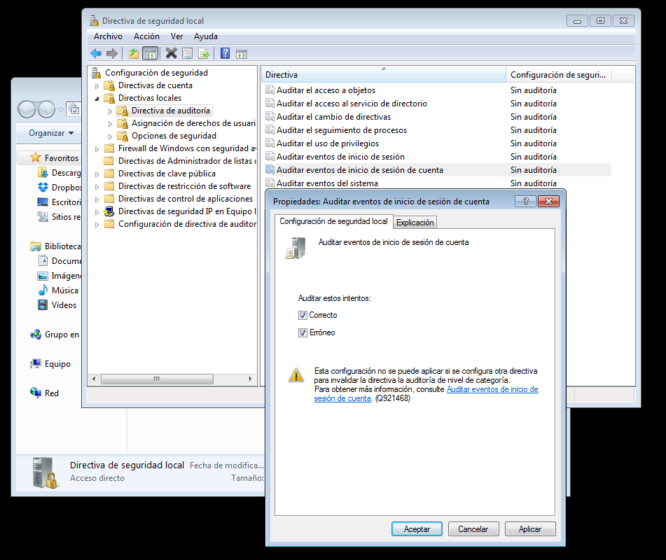
- Luego creamos 3 usuarios para comprobar que la auditoria registra los eventos de inicio de sesión. y hacemos lo siguiente:
-> El usuario 1 inicia sesión correctamente.
-> El usuario 2 inicia sesión incorrectamente.
-> El usuario 3 no inicia sesión.
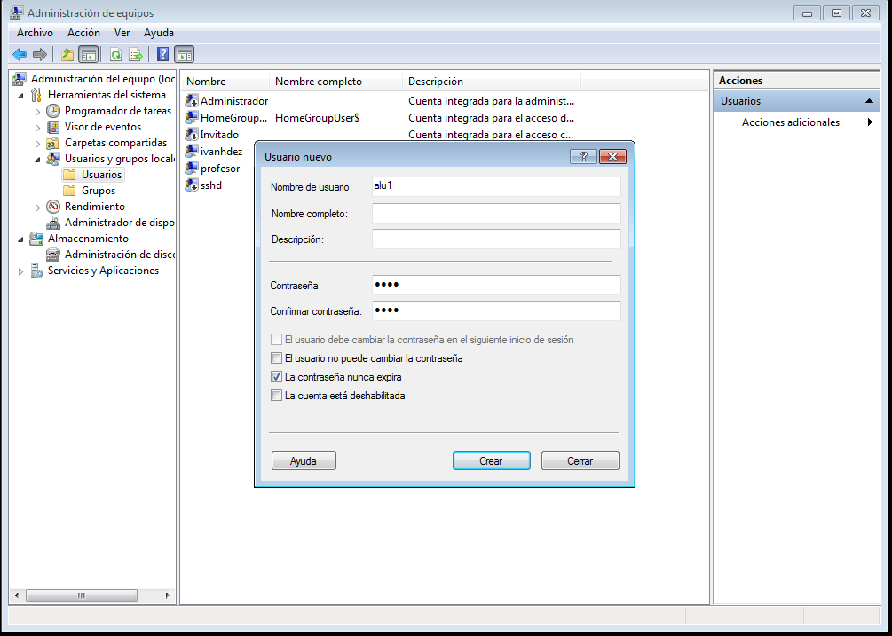
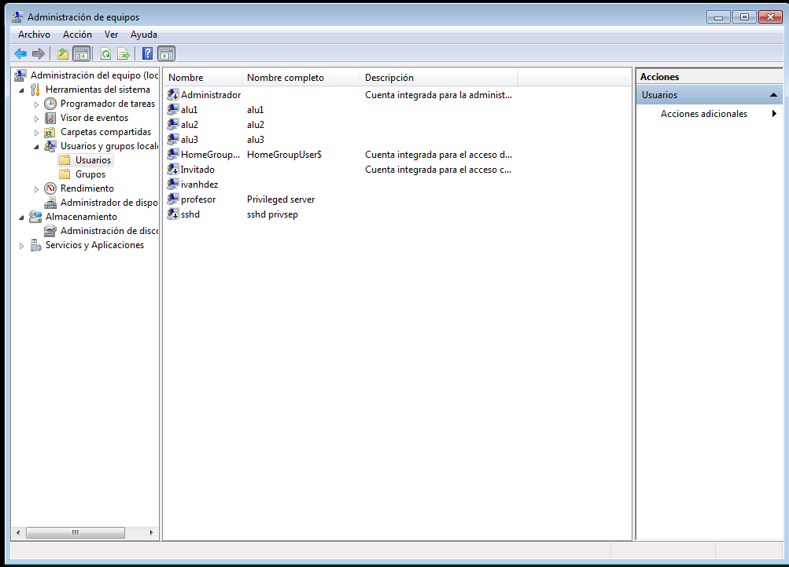
- Ahora vamos al visor de eventos y en la pestaña de seguridad de registros de Windows miramos sale la información siguiente:
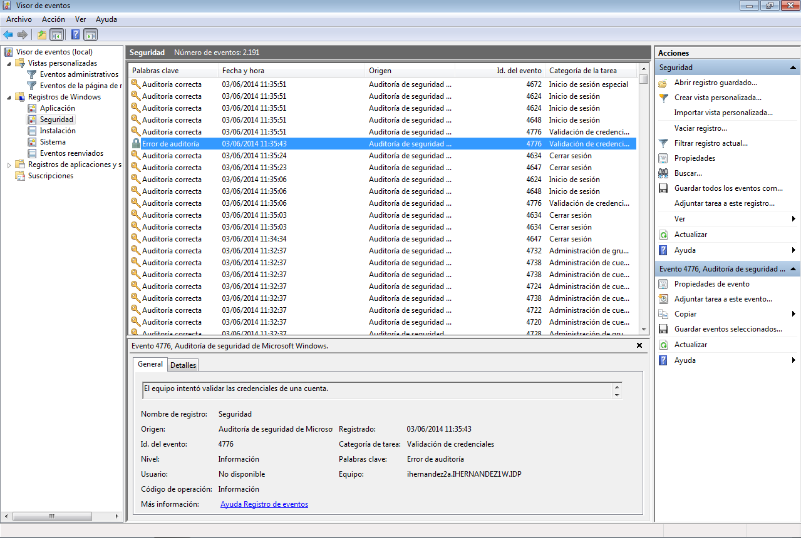
- Además guardamos los eventos en formato ".csv".
Registro de eventos de sesión
- Empezamos cambiando el hostname de la MV debian 7.
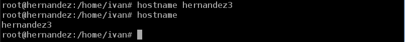
- Luego vamos a la página oficial de Webmin para descargar el archivo ".deb" y luego instalarlo.
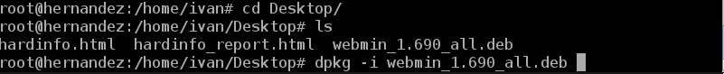
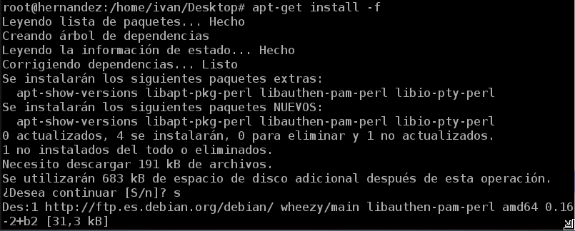
- Ahora iniciamos el servicio del webmin con el siguiente comando:
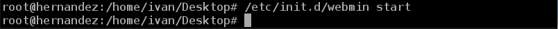
- Para ejecutarlo tenemos que ir a un navegador web y poner la ruta "https://localhost:10000" (Entramos con el usuario root y la clave)
y vamos a la pestaña "System/System Logs" para ver los registros.
 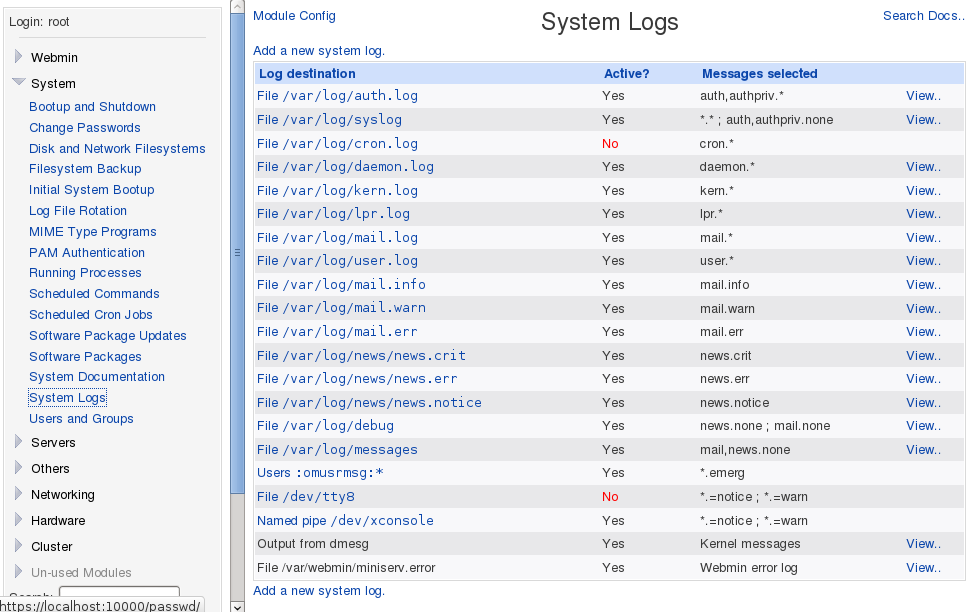
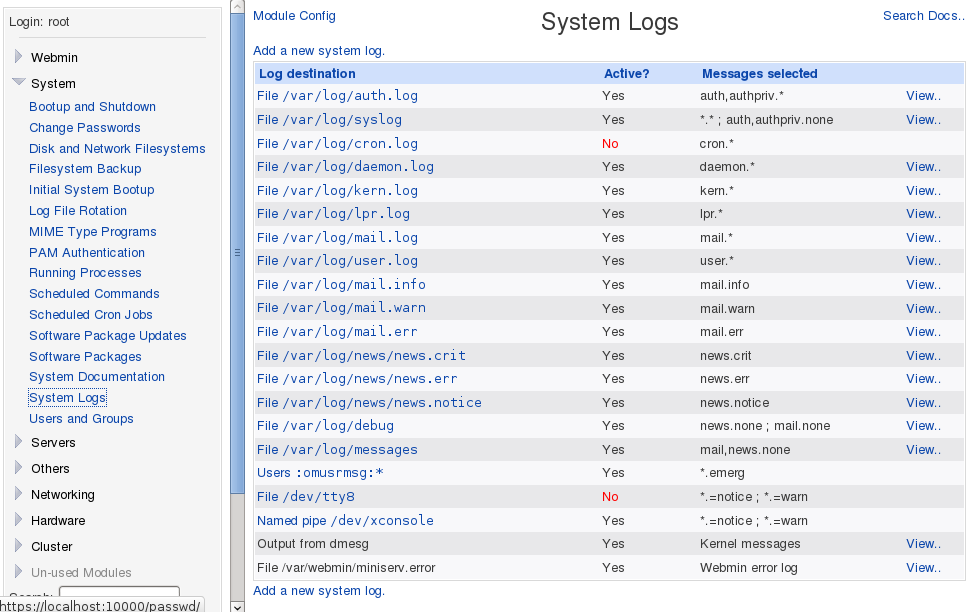
- Vamos al fichero "/etc/rsyslog.conf" y añadimos lo siguiente para configurar la grabación de nuestros eventos.
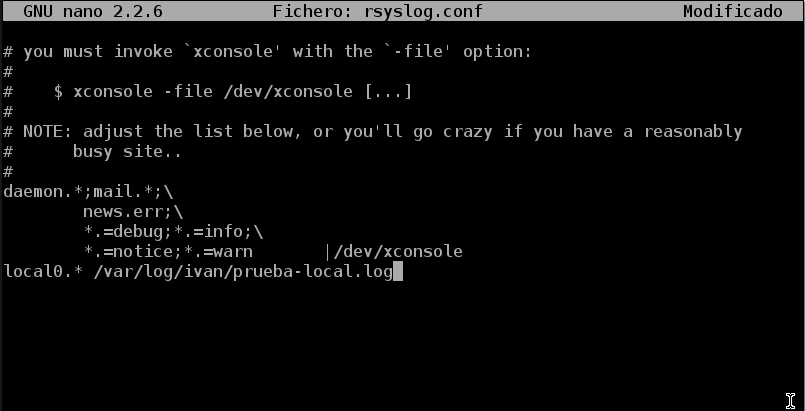
- Ahora creamos un fichero vacío en "/var/log/ivan/prueba-local.log" y reiniciamos el servicio rsyslog para que carge la nueva configuración.
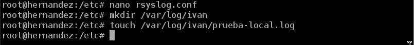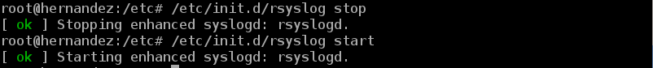
- Luego comprobamos que el fichero está vacío y usamos el comando logger para añadir alguna linea al fichero.
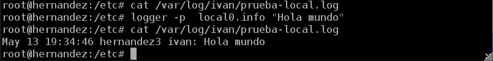
- Primero creamos el archivo "/etc/logrotate.d/ivan" y le añadimos lo siguiente para generar rotaciones de nuestro log.
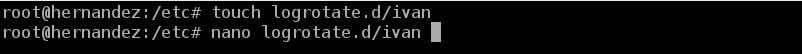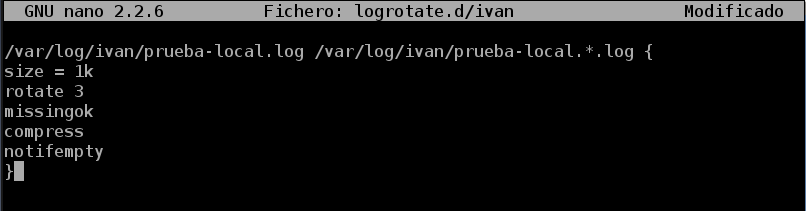
- Ejecutamos el siguiente logger para aumentar de tamaño nuestro archivo .log y luego comprobar que ésta ha crecido.
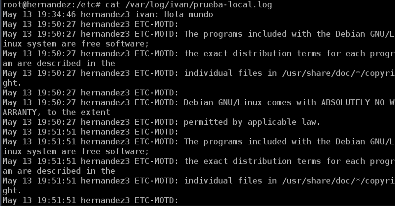
- Para finalizar ejecutamos el comando siguiente "/usr/sbin/logrotate -f /etc/logrotate.conf" para rotar de manera manual el logrotate sin tener que reiniciar el sistema. y comprobar
que se creó el archivo comprimido.
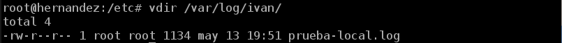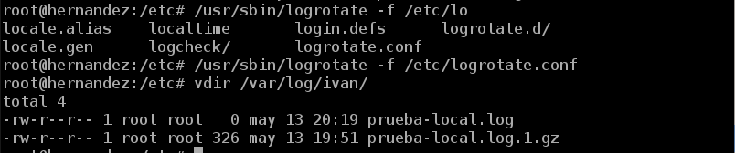